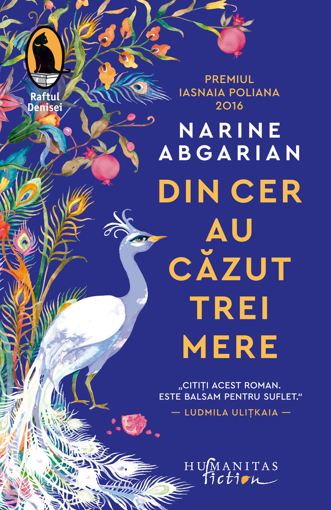
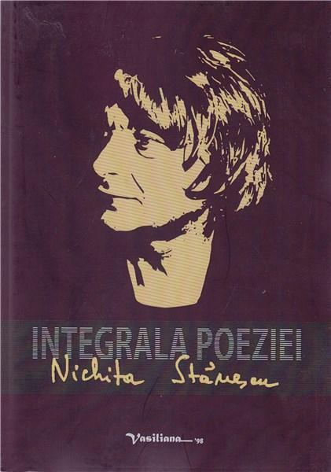
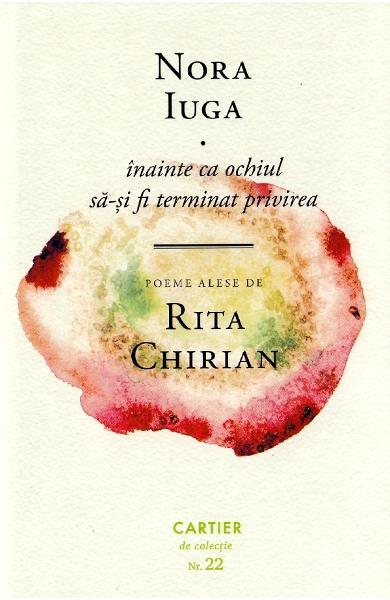

Din cer au căzut trei mere

- Autor: Narine Abgaryan
- An apariție: 2021
- Editura: Humanitas
- Categorie: Ficțiune literară
- Număr pagini: 262
- Preț: 32 RON
- Volume disponibile: 12
O lume in care personajele si intamplarile contureaza o realitate simbolica,
extrasa din amanuntele vietii de zi cu zi, o iubire tarzie care salveaza lumea,
un sat de piatra aflat pe varful unui munte armean, unde magia si misterul si-au pastrat neatinse puterile.
Cu o somptuoasa imaginatie si o atentie deosebita pentru detaliile cele mai fine,
Narine Abgarian construieste un univers in care cititorul isi doreste sa zaboveasca mult dupa ce povestea s-a sfarsit.
In Maran, viata este suspendata intre realitate si basm, intr-un timp care prinde contur incet-incet,
luand dureros forma istoriei. Razboiul si dezastrele naturale au zdruncinat in nenumarate randuri pacea
fragila a oamenilor. Anatolia, a carei viata, nu mai putin decat a celorlalti, a fost marcata de suferinta,
moarte, lupta si indarjire, dar si de evenimente providentiale si semne inexplicabile, este, la 58 de ani,
cea mai tanara locuitoare a micii asezari din varf de munte. Si crede ca viata ei, ca si a satului, se apropie
de sfarsit, fara sa stie ca va fi, de fapt, purtatoarea miracolului care va face totul sa renasca. Iar timpul este invins.
Bunica mi-a zis să-ți spun că-ți pare rău

- Autor: Fredrik Backman
- An apariție: 2020
- Editura: Art
- Categorie: Roman, Literatură domestică
- Număr pagini: 496
- Preț: 48 RON
- Volume disponibile: 5
Elsa are sapte ani si o inteligenta taioasa si necrutatoare care o face sa fie diferita,
dar si marginalizata. Singura care o intelege si care-i cultiva aplombul este bunica,
fost medic in zone calamitate, privita la randul ei de ceilalti drept o nebuna excentrica.
Pentru ca „toti copiii au nevoie de supereroi”, bunica inventeaza pentru Elsa povesti unde
toata lumea este diferita si nimeni nu trebuie sa fie normal, iar scopul este sa o pregateasca
pentru ceea ce urmeaza sa afle si sa i se intample in viata. Personajele din povestile bunicii
- care se dovedesc a fi nimeni altii decat vecinii ei de bloc - ii vor fi alaturi in evenimentele
care o vor lua cu asalt.
Acest roman, care demoleaza cliseele privind normalitatea, ii va inspira negresit pe bunici
in relatia cu nepotii lor si va incanta cititorii de toate varstele. Bunica mi-a zis sa-ti
spun ca-i pare rau este o carte despre diversitate si acceptare.
Integrala poeziei

- Autor: Nichita Stănescu
- An apariție: 2013
- Editura: Vasiliana 98
- Număr pagini: 820
- Preț: 70 RON
Oricât ar fi fost de contestat de la moartea sa, Nichita Stănescu rămâne nu doar un nume de
referinţă al poeziei contemporane, ci unul dintre marile modele ale poeziei româneşti.
Experienţa operei sale a marcat decisiv discursul liric; reiau un loc comun, dar o fac pentru
că el spune lucrurilor pe nume: după momentul Nichita Stănescu, poezia de limbă română este cu totul alta.
El a marcat un teritoriu liric original, recognoscibil, a „brevetat” o manieră ce a avut mulţi imitatori.
Impunându-se cu autoritate, opera sa a dus, logic, şi la reacţii deconstructiviste, cărora le-a făcut
însă faţă fără probleme. Citită azi, la rece, după atâtea noi experimente, poezia lui Nichita Stănescu rămâne,
în cea mai mare parte a sa, proaspătă, neatinsă de vreme. Căutările sale sunt autentice, tonul ei nu s-a învechit.
Nici un alt poet care i-a urmat nu a reuşit nu numai să se identifice într-o măsură asemănătoare cu ideea de poezie,
dar nici să dea o operă copleşitoare, care să modifice limbajul poetic şi să inducă o nouă sensibilitate.
De aceea, cred că, la trei decenii de la moartea autorului său, opera lui Nichita Stănescu este pe val.
Orice istorie a poeziei postbelice va începe cu ea; orice istorie a poeziei române dintotdeauna o va număra
printre cele câteva (patru-cinci-şase) experienţe fundamentale.
Înainte ca ochiul să-și fi terminat privirea

- Autor: Nora Iuga
- An apariție: 2019
- Editura: Cartier
- Număr pagini: 256
- Preț: 25 RON
- Volume disponibile: 10
Poeta de avataruri, Nora Iuga asaza semnul egalitatii intre fenomene de o derutanta diversitate.
De aceea, constructul insoliteaza, insa drumul pe care il parcurge nu este de la obiect la subiect
– acesta reducand totul la dimensiunile lui –, ci de la subiect la obiect, ca act al descoperirii
si al cartografierii. Versul se obscurizeaza, aparentul dicteu automat inerveaza simturile, onirismul
indeparteaza pe cei nechemati; dar, dincolo de scenografia de improvizatii, in spatele pletorei divagante,
se coaguleaza o ravna pentru enormitati si teribilitati. (…) De aceea, discursul se desface pe o spirala
desfasurata in toate planurile temporale si senzoriale, in fotograme care suprapun cadre cu totul opozabile,
ceea ce poate ingreuna lectura. Dar este un efort pe care i-l ingaduim acestei poezii tinere, dionisiace, congestionate.
How to Bake Pi: An Edible Exploration of the Mathematics of Mathematics

- Autor: Cheng Eugenia
- An apariție: 2015
- Editura: Basic Books
- Domeniu: Matematică
- Număr pagini: 288
- Preț: 30 RON
- Volume disponibile: 2
What is math? How exactly does it work? And what do three siblings trying to share a cake have
to do with it? In How to Bake Pi, math professor Eugenia Cheng provides an accessible introduction
to the logic and beauty of mathematics, powered, unexpectedly, by insights from the kitchen:
we learn, for example, how the béchamel in a lasagna can be a lot like the number 5, and why making
a good custard proves that math is easy but life is hard. Of course, it's not all about cooking;
we'll also run the New York and Chicago marathons, take a closer look at St. Paul's Cathedral,
pay visits to Cinderella and Lewis Carroll, and even get to the bottom of why we think of a
tomato as a vegetable. At the heart of it all is Cheng's work on category theory, a cutting-edge
mathematics of mathematics,” that is about figuring out how math works. This is not the math of
our high school classes: seen through category theory, mathematics becomes less about numbers and
formulas and more about how we know, believe, and understand anything, including whether our brother took too much cake.
Complete Illustrated Encyclopedia of Classic Cars

- Autor: Buckle Martin
- An apariție: 2017
- Editura: Anness Publishing
- Domeniu: Mașini
- Număr pagini: 512
- Preț: 40 RON
- Volume disponibile: 15
A guide to some of the most important classic, modern classic and dream cars of the 20th century.
It includes a detailed history on the evolution of the automobile, with special features on design,
technological advances, social use, and more. It also highlights the world's dream cars that were built
as showcases but never produced.
Leonardo: Insatiable Curiosity

- Autor: Justin Smith
- An apariție: 2015
- Editura: Lightning Guides
- Domeniu: Artă
- Număr pagini: 120
- Preț: 20 RON
- Volume disponibile: 14
Leonardo da Vinci’s legacy is everywhere: from bridges to helicopters, fashion to fiction,
flying machines, human anatomy, not to mention some of the most compelling artworks ever created by man.
Leonardo da Vinci was centuries ahead of his time, a visionary and innovator turned international icon.
Fueled by his limitless desire for knowledge, Leonardo made groundbreaking advancements that still influence
and inform our world today. InLeonardo: Insatiable Curiosity, historian and philosopher Justin Smith traces
the artistic drives of the quintessential Renaissance thinker, captures a glimpse into the man behind the genius,
and pays tribute to a life without which the word curiosity would have never found its real-life representative.
Gerda Taro: Inventing Robert Capa

- Autor: Jane Rogoyska
- An apariție: 2013
- Editura: Jonathan Cape
- Domeniu: Media
- Număr pagini: 246
- Preț: 100 RON
- Volume disponibile: 5
In Paris in 1934, a young and beautiful Jewish émigrée, Gerda Pohorylles, met a Hungarian political
exile, André Friedmann. They reinvented themselves as the photographers Gerda Taro and Robert Capa—and
he would become the most important photojournalist of his generation. When Gerda was killed in the
Spanish Civil war at the age of 26, Robert Capa was her most notable mourner—his grief was beyond control.
Her funeral drew crowds of thousands and she became a hero of the political left. Despite the legend
that was built around her, she subsequently became a mere footnote in Capa's story. Seventy years
after her death a long-lost suitcase was discovered in Mexico, containing thousands of negatives
by Capa and Taro. Most astonishingly of all, the "Mexican suitcase" showed that photographs that
had been attributed previously to Capa were, in fact, the work of Taro. Jane Rogoyska's book will
trace Taro's life and reveal the depth of her relationship with Capa.